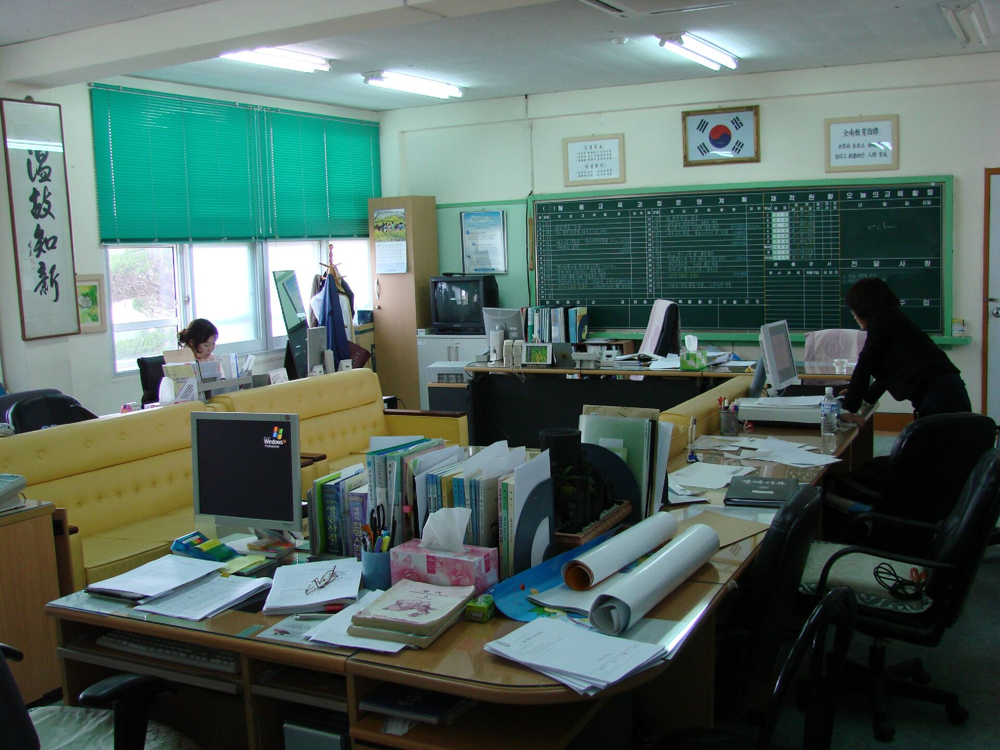
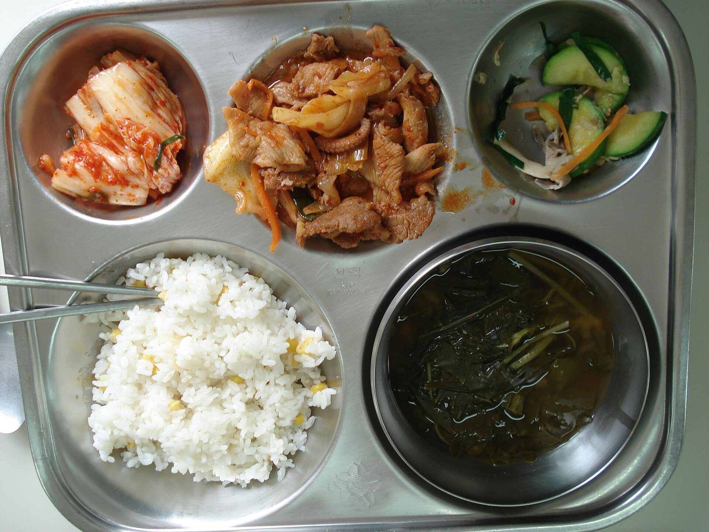
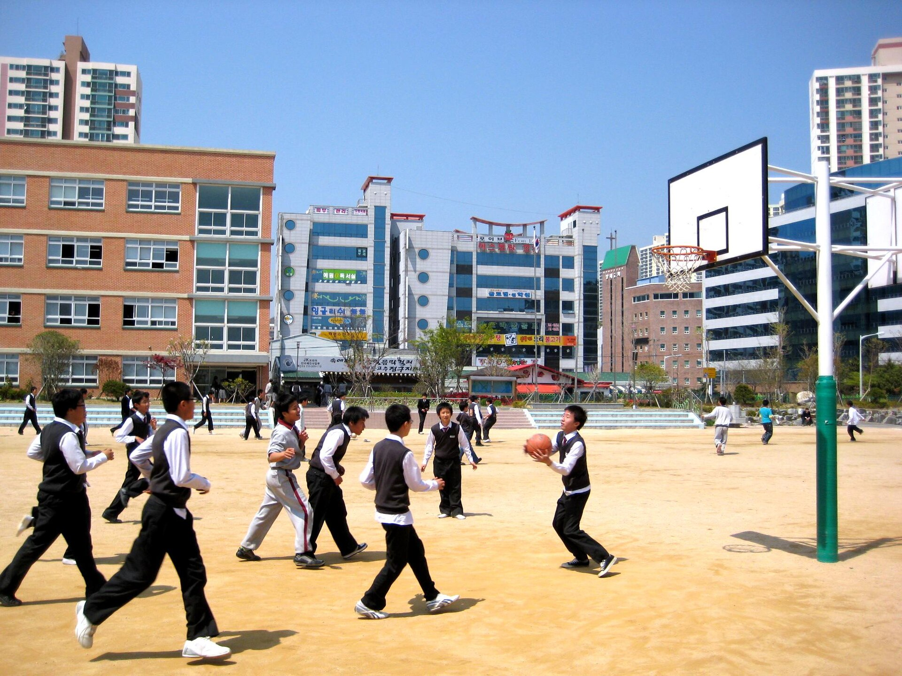

양식 그대로 걷고그대로 돌려받기
쓰던 한글 양식을 올리고 동학년에 링크 하나만 보내세요. 다섯 반의 답이 그 양식에 채워져 돌아옵니다.
동학년판 무료 · 베타 11월 30일 · 정식 12월 14일(월)
제출
한 반의 제출, 세 순간
기다림
4-4 이수빈 · 방과후 수요조사
링크 받음 10/26 08:20 · 마감 10/27(화) 12:00
손댈 때
4-4 이수빈 · 방과후 수요조사
링크 받음 10/26 08:20 · 마감 10/27(화) 12:00
받는 선생님은 로그인 없이 링크로 냅니다. 바빠서 못 내면 동학년 누구든 대신 낼 수 있어요. 가운데 줄의 「대신 내기」를 눌러 보세요.
끝
4-4 이수빈 · 방과후 수요조사
10/26 11:42 정하은 선생님이 대신 냄
방과후 11명돌봄 2명제출
먼저, 쓰던 한글 양식을 올립니다
hwp도 hwpx도 됩니다. 미리보기에서 채울 표를 한 번 누르면 칸이 정해져요.
학교의 하루는 네 칸
고티처의 시간은 학교 시정 그대로 1블록, 2블록, 3블록, 방과후입니다. 알림도 그 경계에서만, 하루 세 번 묶어서 옵니다.




아침에 여는 한 화면
알림은 하루 세 번, 쉬는 시간에만
교실 TV에 화면이 나가는 수업 중에는 아무것도 띄우지 않습니다. 시각을 골라 보세요.
어제 퇴근 이후 바뀐 것만
장소와 시간이 바뀐 일정은 이전 값을 지운 채로 보여 줍니다. 전체를 다시 읽지 않아도 돼요.
내가 낼 것과 내가 보낸 것
나에게 온 취합은 마감순으로, 내가 보낸 모으기는 몇 반이 냈는지로 봅니다.
자주 묻는 것